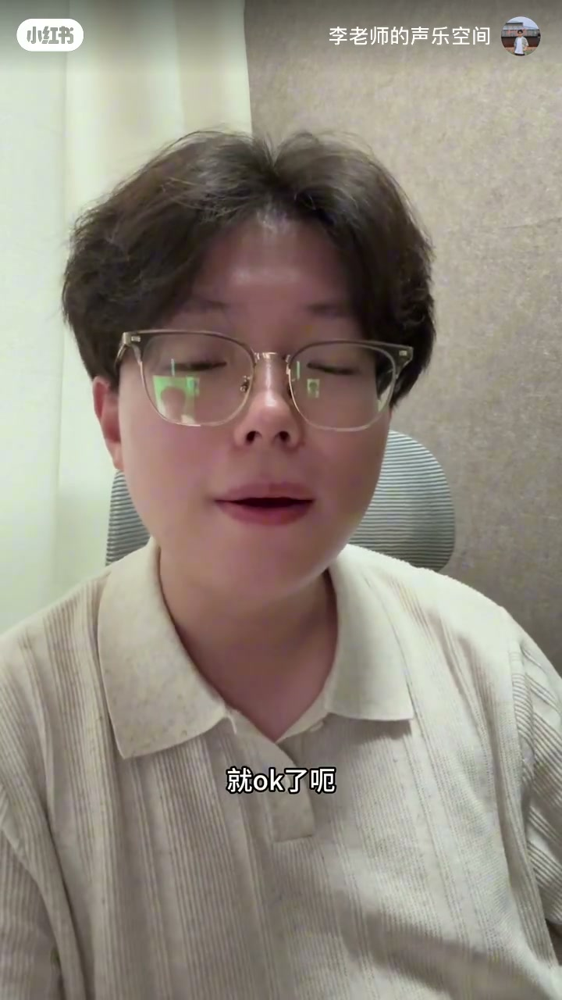

内容要点
知识结构
今天要讲的是唱歌当中用气息的核心——腰腹部气息到底怎么用；很多人把「腰腹绷紧 / 小腹内收」当成正确用气，其实踩进了误区。
故意做收腹、内收动作时，声音会变得非常僵硬、失去流动性；即使做了这些动作，唱起来喉咙还是紧——因为还没出声就先对抗住，所谓的「安全感」并不成立。
发声过程中腰腹部会自动绷紧；出声之前其实需要放松。气息对抗是动态的，不是刻意先夹住、先绷住——那样也能唱，但听着没有流动性，混声的动态平衡也做不到。
吸气时用鼻子带动嘴巴、贴着上口盖方向，微微打哈欠兴奋打开内口腔；先别管腰腹有没有吸起或绷紧。然后往下给气，用吐「嘶」代替发声，感受腰腹部自己的动作。
吐「嘶」时腰腹会自然绷起、往两侧展开，此时已经是动态对抗，不是刻意僵死。实唱时同样：不用故意绷肚子，兴奋吸开口腔、往下探着唱，肚子会主动配合。
用对气息的关键不是「唱前先绷住」，而是「出声前放松、发声中让腰腹自动对抗」——理清这个逻辑，声音才流动得起来。
图文实录
开场：腰腹部气息到底怎么用
视频开场打出「正确用气！保姆级教程」。李老师说明：今天要讲的是唱歌当中用气息的核心、正确用气息的精髓——唱歌时腰腹部的气息到底怎么用，并分享自己的经验与心得。
接着他点出常见误区：很多人知道唱歌时腰腹部要绷紧，所谓「气沉丹田」；还有同学认为小腹要收紧、甚至向里内收，就觉得这样才是正确用上气了。
误区：还没出声就先对抗住
他追问：当你故意做这些动作时，有没有发现声音变得非常僵硬、失去了流动性？甚至做完之后，唱起来喉咙照样紧。为什么？
他形容那种状态：感觉好像还没出声音，就先对抗住、先使上劲儿，追求所谓的安全感——「不是的」。真正需要的，是在发声过程当中让腰腹自然工作。
机制：出声前放松，过程中自动绷紧
核心判断落在时机：在你发这个声音的过程当中，腰腹部自己会自动绷紧；而在出声音之前，其实它是需要放松的。很多同学不理解这一点，所以声音越唱越僵硬、始终流动不起来，混声的动态平衡也一直做不到。
他补充：先夹住也能唱，但声音听着没有流动性——这正是误区最贵的代价。
正确步骤：兴奋开口腔，别管腰腹
进入可练步骤。吸气时：用鼻子带动嘴巴，贴着上口盖（Whisper 记作「上口感」，画面字幕为「上口盖」）这个方向；正常、微微打着哈欠，兴奋地把内口腔打开来吸气。
这个时候不要管腰腹部有没有吸起来、有没有绷紧——「不用管，你就保持放松就行，不要想它」。你想的是上面这儿：保持兴奋感打开；然后唱的时候，往下给气。
用「嘶」代替发声：感受自然配合
他先不急着唱词，而是给一个「嘶」：先吸气，再吐「嘶」，去感受腰腹部自己的动作。吐「嘶」的过程，其实就是你出声音、也就是你唱的过程当中腰腹部该有的动作。
他强调：一定要提前先放松，不用去鼓它；它会很自然地配合上去——绷起来、往两侧展开。这个时候已经气沉丹田了，这已经是你的动态对抗，不是刻意僵死、僵住的声音。
实唱验证与收束逻辑
用这个状态去唱，他示范了一段抒情旋律（歌词含「早知道是这样像梦一场……」）。唱完后收束口诀：不用故意去绷肚子；兴奋地去吸开那口腔，然后往下探着唱的时候，你的肚子会主动配合你，它自己会绷紧。

全片闭环：把「气沉丹田」从开唱前的静态夹紧，改写成发声中的动态配合——这才是他所说的用对气息最重要之处。